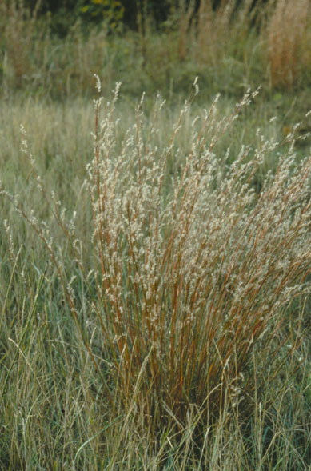
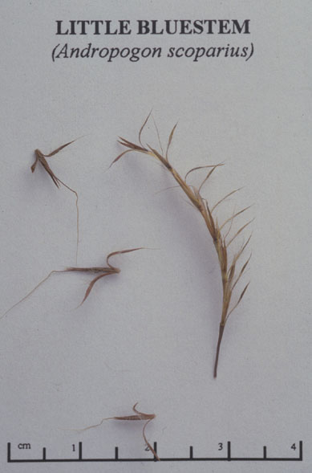

Andropogon Scoparius
Family: Poaceae
Little Bluestem
Swink/Wilhelm #5

Click to view larger photo
FLOWERING: August - September
SEED TIMING: October to mid-November
HABITAT: Dry prairie, but also found in mesic and moist prairie
DIAGNOSTIC FEATURES: 1 - 4 feet. Grows in clumps or dense tufts with up to 200 flower stalks. Flowers are bright and bristly, often confused with seed. Young shoots are bluish-green and leaf blades often are folded. In fall, flowering stalks turn a mixture of tan and wine-red contrasting with the fuzzy white pappus of the seeds that line them.
TO PICK: Seeds form a soft, fuzzy pappus lining the flower stalks. Fluffy seeds may be stripped from the stalk, but this is time consuming. It is easier to simply clip the entire stalk with pruners or knife and place stalks head down in a large paper bag. Store in a cool dry place until early November when seed can be processed all at once.